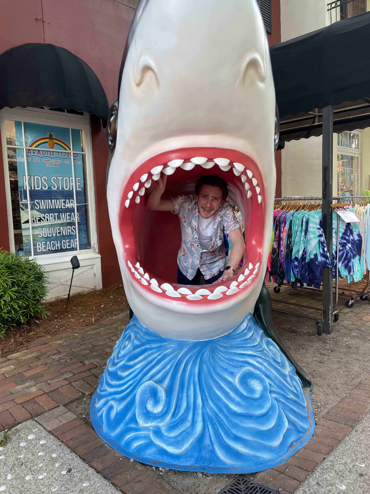
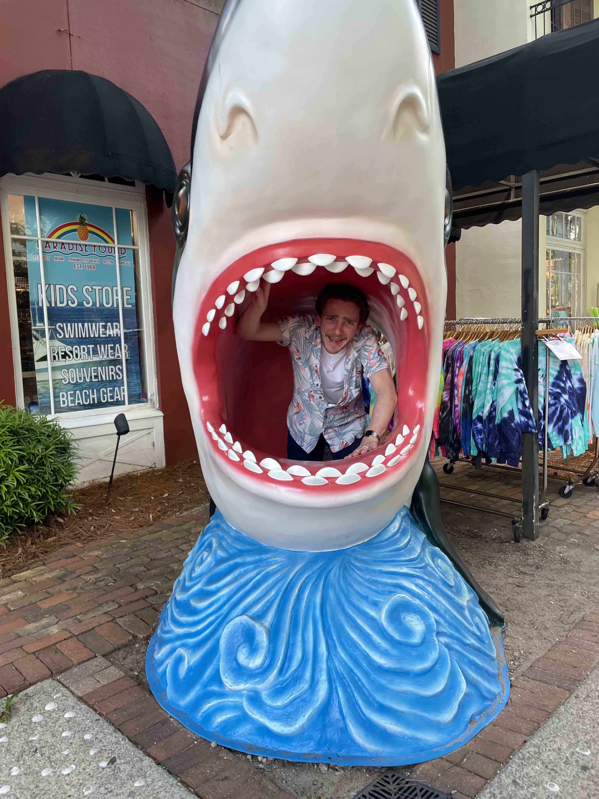

I'm a junior at Penn State Behrend, majoring in Digital Media, Arts, and Technology. I have a passion for digital creation, and I'm currently working as a student assistant at the Virtual and Augmented Reality (VAR) Lab at Penn State Behrend.
I'm always seeking ways to improve my skills, with the goal of working in an environment that values efficiency, creativity, and digital innovation. I'm eager to apply my knowledge to any job or business.
While I’ve always enjoyed playing video games, my curiosity has shifted toward understanding how games function and are created. This growing fascination fuels my desire to learn more about game development.
I grew up in Clarion County, nestled between Pittsburgh and Erie, and have a deep appreciation for both cities—each offering something unique that I value.
If you'd like to know more about my work and experience, feel free to check out my resume below.
 
